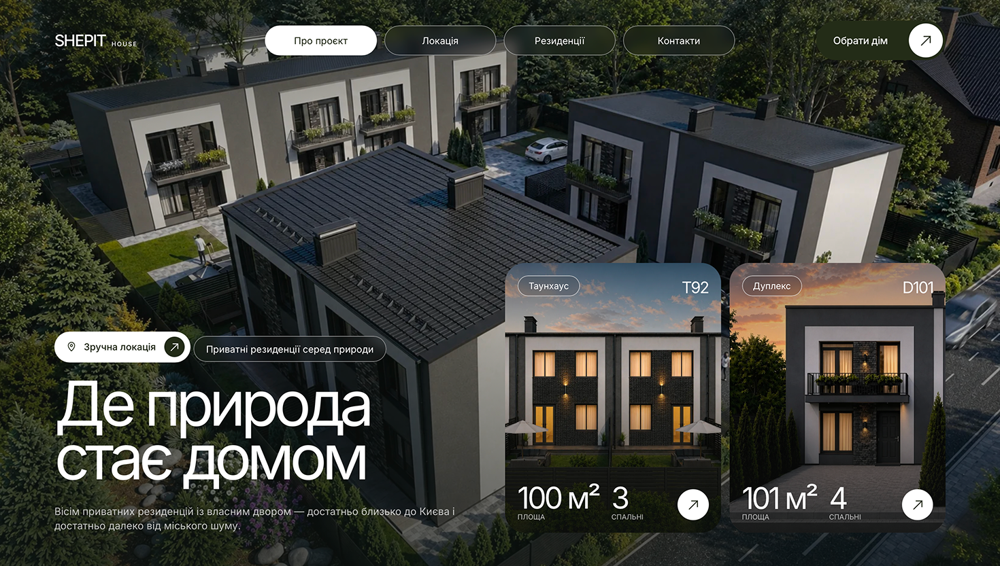
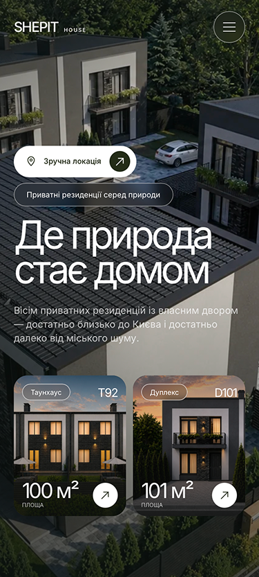
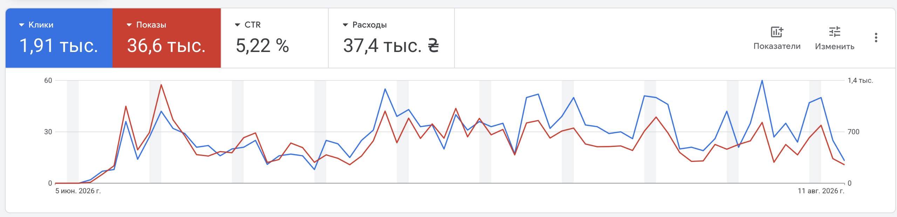
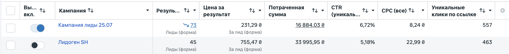
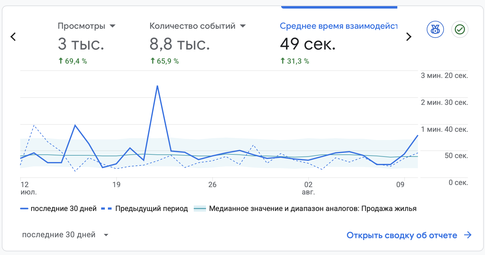
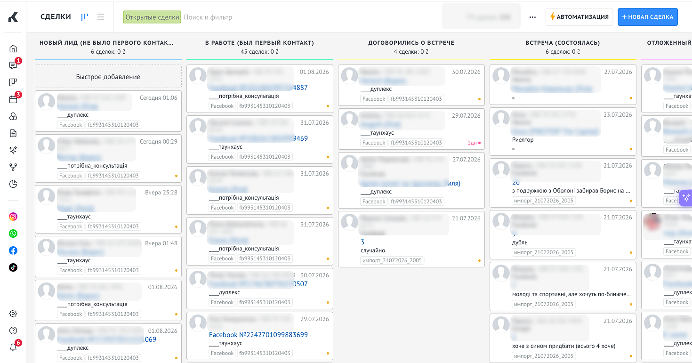

С чем
пришли?
- Новый проект без единой digital-системы
- Нужно сформировать понятное предложение
- Не было связки: сайт, реклама, аналитика и продажи
- Требовалось запустить привлечение спроса
Кейс: SHEPIT HOUSE
⌖Киевская область
⌂Продажа таунхаусов
лидов из Meta Ads + Google Ads
Привлечение сформированного и потенциального спросастоимость лида после оптимизации
73 лида при бюджете 16 884 грнснижение стоимости лида
С 755 грн до 231 грнCTR лучшего объявления
Результат оптимизации рекламных групп и объявлений


Семантическое ядро · коммерческие запросы · группы объявлений · минус-слова · оптимизация CTR

лидов · 755 грн стоимость лида
Бюджет 33 995 грн
лида · 231 грн стоимость лида
Бюджет 16 884 грн
дешевле лид после оптимизации
стоимости лида
−50% рекламного бюджета
Разные точки входа: дом, локация, условия покупки и архитектура.
Настроены GA4, GTM, Meta Pixel и события — от первого перехода до отправки формы.

Все обращения передаются в работу отдела продаж и проходят понятную последовательную воронку.

В результате SHEPIT HOUSE получил рабочую digital-систему: от первого контакта с проектом до обработки заявки и следующего шага отдела продаж.